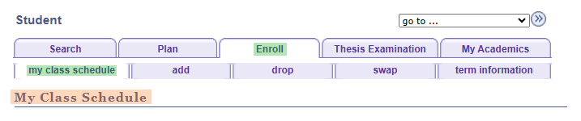
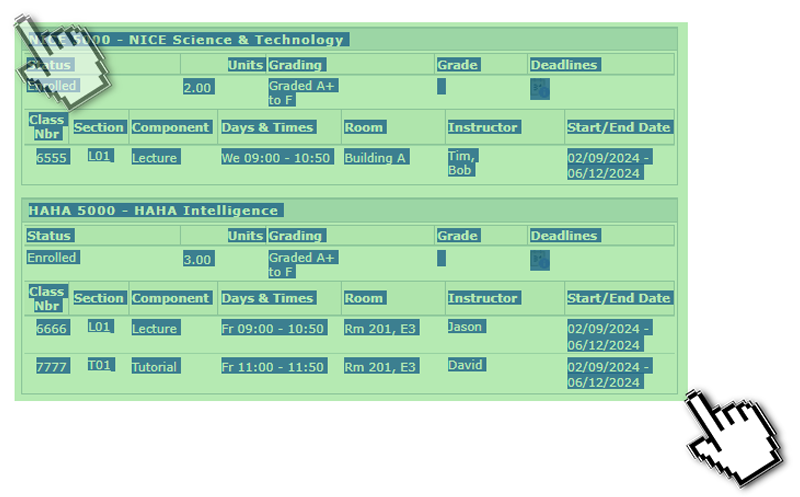
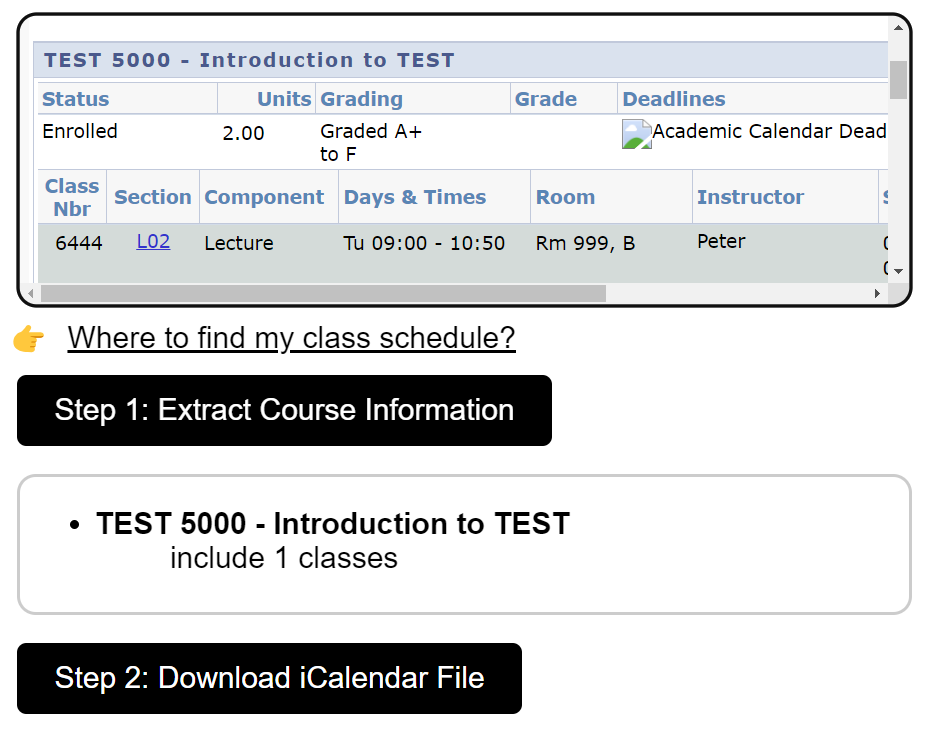
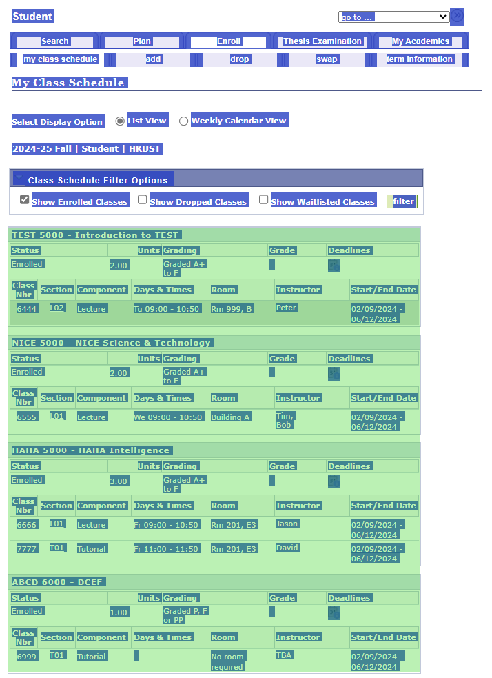
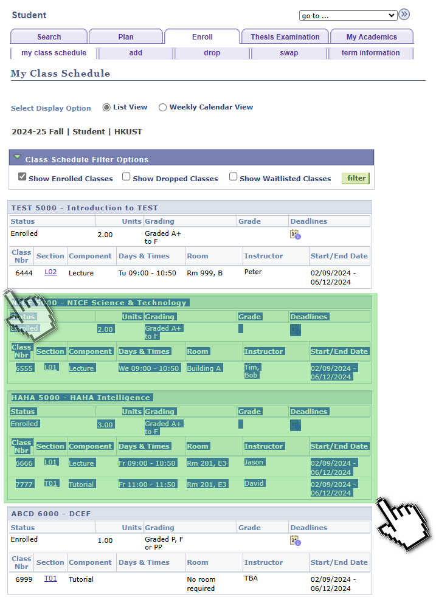
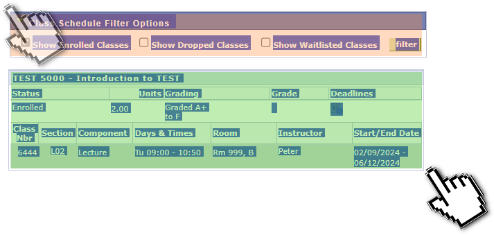

Learn how to use the Course Schedule Converter with this step-by-step guide👋
Login to SIS and go to [Student Center -> Enroll -> my class schedule]
You may need to select the correct term and click "Continue".
Dragging the pointer or finger to select a course.
(You do NOT need to carefully select each course)
The converter will recognize which courses are included.
Copy the selected courses and paste them to the converter.
Click the "Extract" button.
Then, the converter will extract the course information.
Click the "Download" button.
If you want to select all courses, you can press Ctrl + A to select all page content.
It will not affect the result. So some information other than courses is acceptable.
 If you want to select ONLY ONE course, you better select some information other than courses. Otherwise, the converter may not work properly.
>Notice: The converter may not work properly if the course information is not copied correctly.
>Notice: The converter does not support the WeChat browser.
>Notice: The converter is being tested. If you find any bugs, please report them to the developer.(better with screenshots and course information)